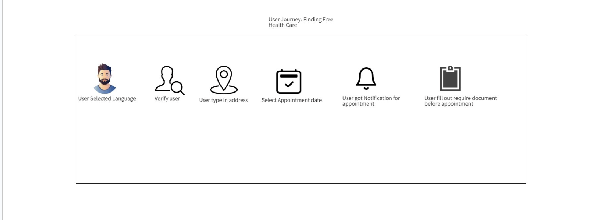
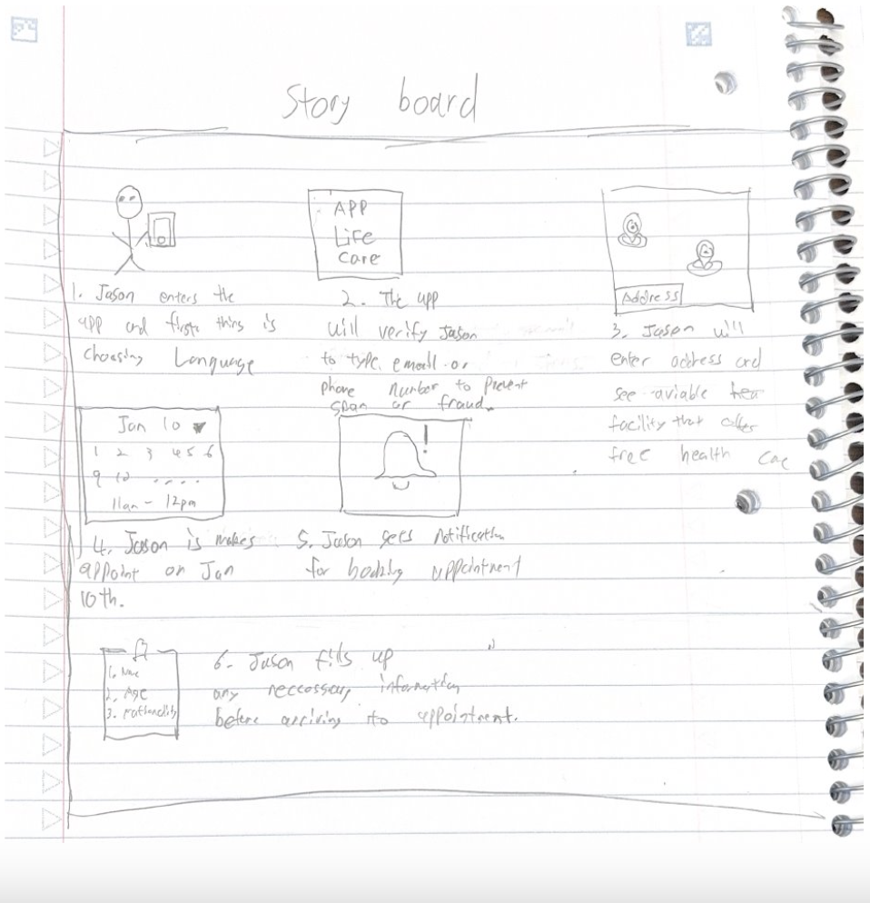
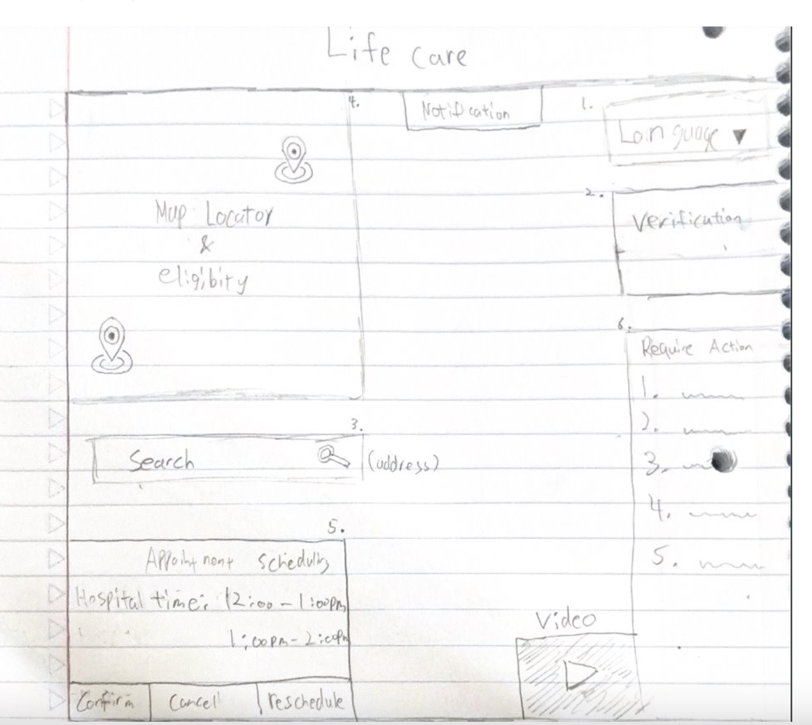

Our human-centered approach to solving healthcare access challenges
We conducted interviews and surveys with refugees, immigrants, and healthcare providers to understand the key pain points in accessing healthcare services. Our research revealed significant barriers including fear, confusion about eligibility, and language challenges.
We created detailed personas representing our target users and mapped their journey from recognizing healthcare needs to receiving care. This helped us identify critical touchpoints where our solution could make the biggest impact.
We developed storyboards to visualize how users would interact with our solution in real-world scenarios. This helped us ensure the design would be intuitive and address users' emotional needs, particularly around privacy concerns.
We created low-fidelity and high-fidelity prototypes, refining our designs based on user feedback at each stage. Key improvements included simplifying the eligibility checker and adding multilingual support.
